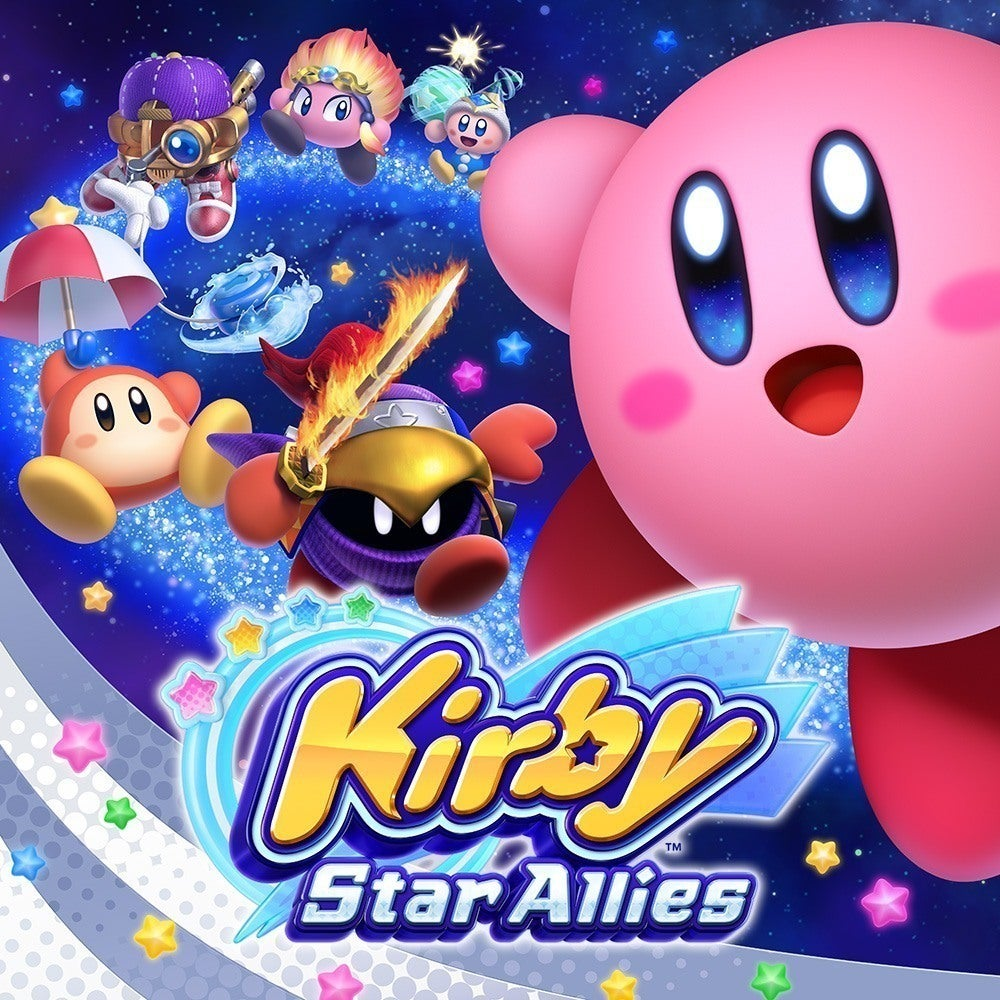
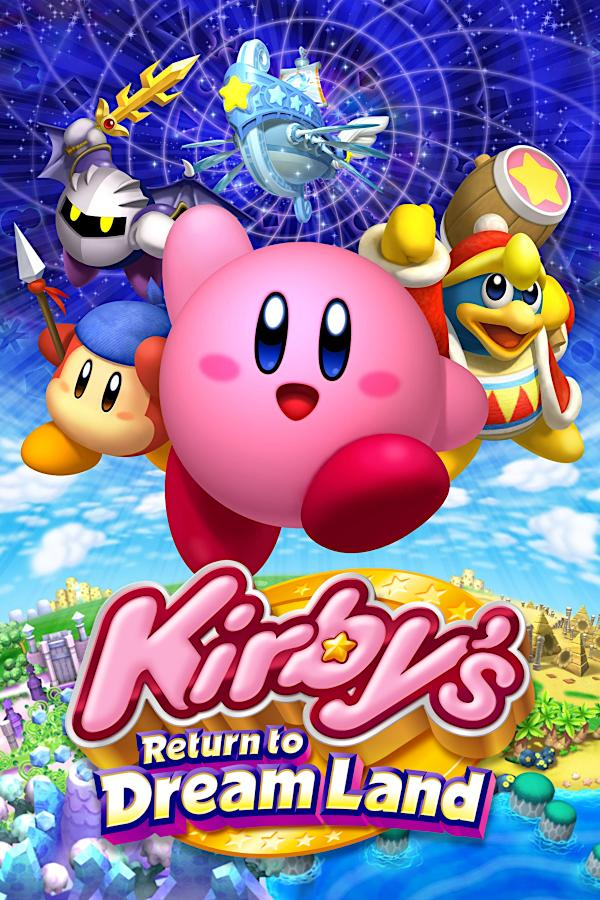

The Kirby Universe
Kirby is an action-platform video game series developed by HAL Laboratory and published by Nintendo. The series centers around the adventures of a pink, round hero named Kirby as he fights to protect and save his home on the distant Planet Popstar. The Kirby series includes 39 games, and has sold over 40 million units worldwide, making it one of Nintendo's best selling franchises, and putting it in the top 50 franchises in the world.
Star Allies
Kirby Star Allies is a 2.5D platform game played from a side-on perspective. Players control the series' titular protagonist Kirby who can be accompanied by up to three companions. Kirby can throw hearts at enemies to turn them into allies. It is the twelfth mainline installment in the Kirby series, the player controls Kirby in his quest to prevent a priest named Hyness from reviving a dark force to destroy the universe. Kirby must complete each level by jumping, inhaling enemies, and using his array of abilities to progress.
The Forgotten Land

The primary objective in Kirby and the Forgotten Land is to rescue all the fuzzy little blobs and return them home to Waddle Dee town. Aside from being the right thing to do, this will also help improve and upgrade various buildings you can interact with in your town hub level. Kirby and the Forgotten Land was well received by critics, praising its graphics, level design, gameplay, soundtrack, and amount of content, with some calling it among the best games in the series.
Return to Dreamland
This game's plot follows Kirby, King Dedede, Meta Knight, and Bandana Waddle Dee as they help an alien named Magolor recover the pieces of the Lor Starcutter so he can return home. The driving force is to help Magolor repair his ship so he can return home, along the way coming across both new and familiar Kirby foes.